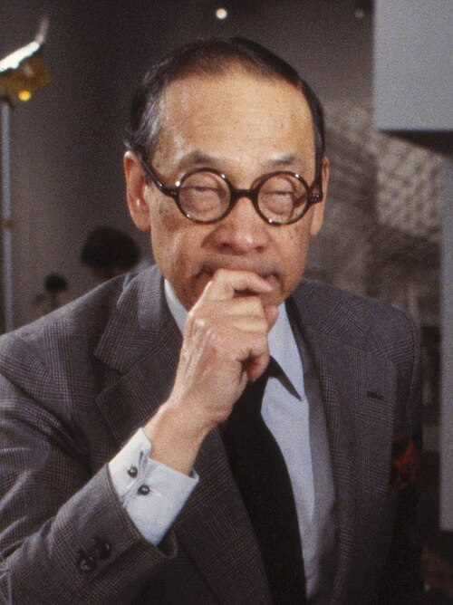
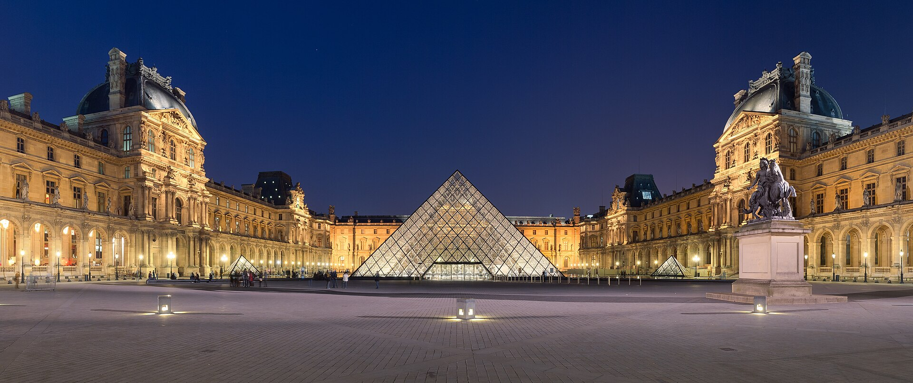
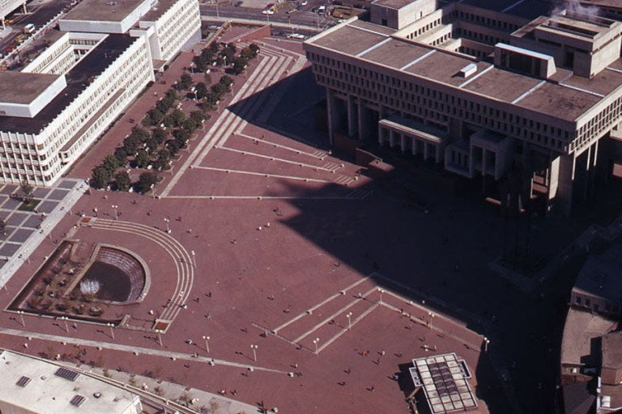
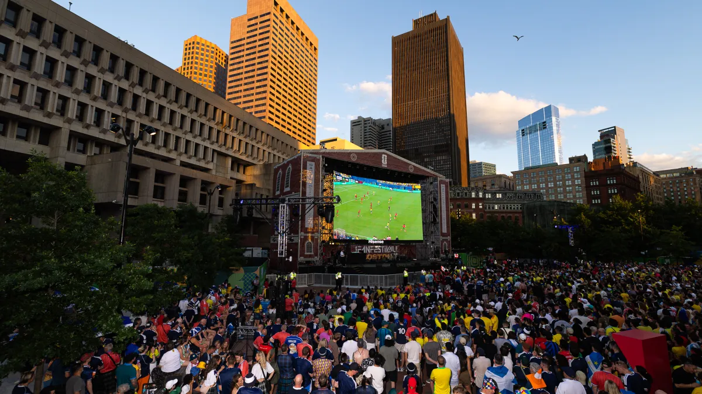
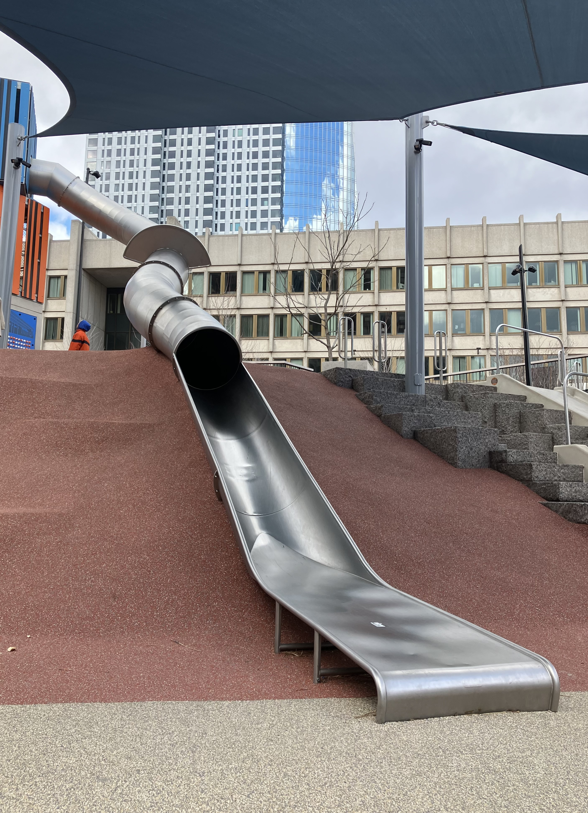
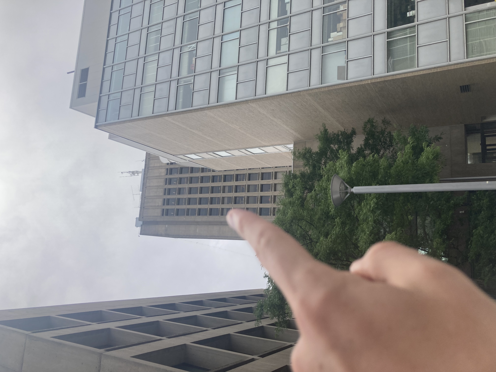
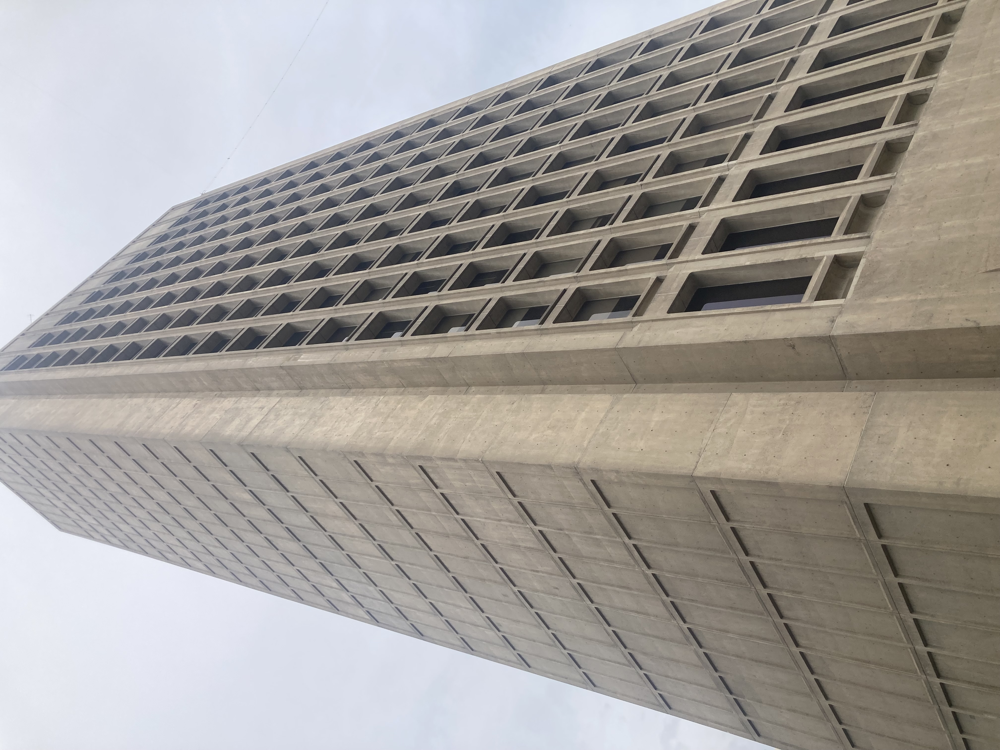
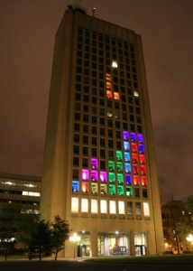
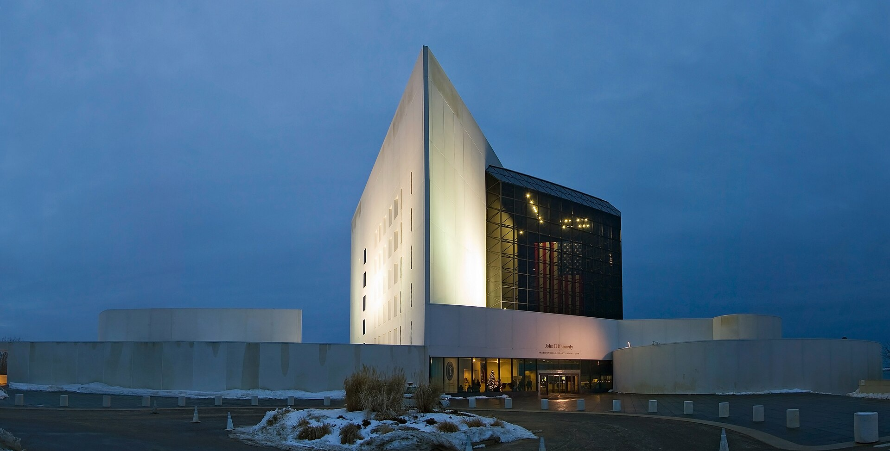
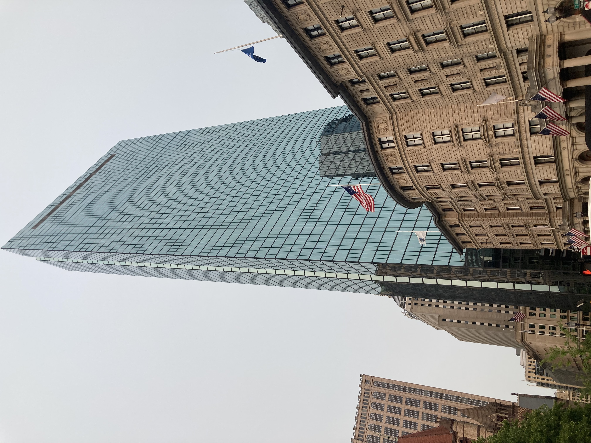

Andrew's Blog
Andrew's Blog



You know what cities have a lot of? Buildings. You know who builds a lot of buildings? Architects. This month we are going to learn more about one of those artists who helped shape the city of Boston that I live in today. June's topic is Architect Highlight - Find a prolific architect from your area and go look at the different buildings they did.
Boston is famous for a lot of its Colonial and Federal era architecture. It has some well known brutalist structures too. But this month I want to focus on a more modern styled architect, I.M. Pei.
I.M. Pei was born in Guangzhou China in 1917. Despite being inspired by the architecture he grew up with in China, Pei wanted to travel to the U.S. for college. In a 2000 interview he said "College life in the U.S. seemed to me to be mostly fun and games. Since I was too young to be serious, I wanted to be part of it". In 1935, he took a boat from China to San Francisco and then a train to Philadelphia to study architecture at the University of Pennsylvania. However, he did not like it there. Penn's program focused on classical architecture from Greece and Rome. Pei didn't care for this and instead transferred to an engineering program at MIT.
MIT begins Pei's storied career in the greater Boston area. Ironically, the dean of architecture at MIT noticed his talent for design and convinced Pei to switch back to his original major. Ironically, MIT at the time had a focus on the ancient Beaux-Arts style inspired by the Greeks and Romans too. Nevertheless, Pei credits his time at MIT with introducing him to the science and math of buildings. He also discovered and met one of his heroes, the Swiss architect Le Corbusier. Le Corbusier's style inspired Pei to have an interest in simple steel and glass designs.
Around this time, Pei met and married Eileen Loo, at the time a student at Wellesley College. Loo later attended Harvard and introduced Pei to faculty in the school of design. This became his next step. Pei earned a Masters in Architecture from the Harvard Grad School of Design in 1946 and continued to teach at the school for another two years.
In the late 40s, Pei joined the architecture firm Webb and Knapp based in New York. He contributed to projects all over the country. I won't get into them all here (since we are focused on the local Boston area) but you can read about them in his Wikipedia article.
I am going to focus on some of Pei's works in Boston. But before that, I do want to mention possibly his most famous project. In 1981, French President François Mitterrand recruited Pei to work on renovations on The Louvre, making Pei the first non-French architect to work on the museum. Pei did many refurbishments to the museum, but most prominently, he designed the iconic Louvre pyramid.

I know this is a Greater Boston Area blog today, but I couldn't leave off that achievement.
In Boston, Pei made many contributions, including but not limited to:
1. Government Center Plaza - In the 1960s, I.M Pei & Associates worked on the redesign of the Boston city hall plaza known as Government Center. Pei's team designed the public space surrounding the city hall. They were not the architects of the controversial brutalist building that the offices are in, they just designed the plaza. Their work has created a public space that is now used for many events like the Fifa World Cup Watch Party, Boston Pride, music festivals, national bike to work day celebrations, and other civic events.


As great and useful as this space is today, it has evolved over the years. Pei's design in the 60s did not include the playground containing Boston's infamous cop slide... So, goes to show there is always room for improvement.

2. Cecil and Ida Green Building - This is the home of MIT's Department of Earth, Atmospheric, and Planetary Sciences. When it opened in 1964, it was the tallest building in Cambridge! It now holds 7th place, the current record holder is a different MIT tower that houses graduate students. The Green building is built in a brutalist style with material that resembles limestone. The height plays a practical purpose as well, the building rooftop holds meteorological equipment for the Earth science students.
The height and prominence surrounded by smaller buildings caused a large wind effect that often made wind tunnels near the entrance and caused some damage to upper windows.


MIT is full of nerds. These nerds did some cool stuff to this building. Because of how tall and exposed it is, it is the perfect building to play games on. Starting in 2011, MIT students have used it for Tetris every once in a while.

3. JFK Library. Massachusetts has been the home state of four presidents. One of their presidential libraries is in Boston! The JFK library. After JFK was assassinated the Kennedy family spent a long time deliberating who should be the architect of his library. Jackie Kennedy decided on Pei saying "He was so full of promise, like Jack; they were born in the same year. I decided it would be fun to take a great leap with him."
The work on the library faced many setbacks. Starting development in 1964, the library was dedicated and opened in 1979. It was built in a Modernist style and is located on a peninsula in Boston's Dorchester neighborhood near University of Massachusetts Boston. The building received critical acclaim from reviewers. However, Pei himself was unhappy with it. The years of compromise had changed his original vision and he felt "It could and should have been a great project. I wanted to give something very special to the memory of President Kennedy." Nevertheless, this project was successful and significantly boosted Pei's reputation as an architect. The pyramid structure in this library went on to become the inspiration for the Louvre.

4. The John Hancock Tower. The last building I want to talk about is not the one I thought it was. There is a cool building in Boston called the Old John Hancock Building. Maybe that will be the subject of another flâneur adventure. But that was designed by Boston architecture firm Cram and Ferguson. Pei designed a different John Hancock building, the successor and reason the other building is called "Old John Hancock", Pei built the John Hancock Tower. This building is sometimes referred to by its address, 200 Clarendon Street.
It was completed in 1976 and continued Pei's trend towards Modernist designs. This building faced similar challenges to the Green Building at MIT. It was tall and isolated from other towers so it was exposed to wind damage. In 1973 during construction a wind storm damaged much of the glass and incurred delays and significant costs to construction. Pei did not like to talk about this project.

In the 1990s Pei's firm began to shrink and he took more of a back seat role. For the rest of his life he worked on smaller museum projects around the world in the US, Japan, Germany, Luxembourg, Qatar, and China. He continued working until his death in 2019. He was 102 years old.
This is nowhere close to a full list of all the buildings Pei architected! Admittedly, I do not think about architects often, but they really do shape the landscape that we live in. It is fun to be more aware of the people who designed this city and all the buildings they created. This month is going to reshape the way I look at cities and think about buildings going forward.
Subscribe to the RSS Feed to see more flâneur content!